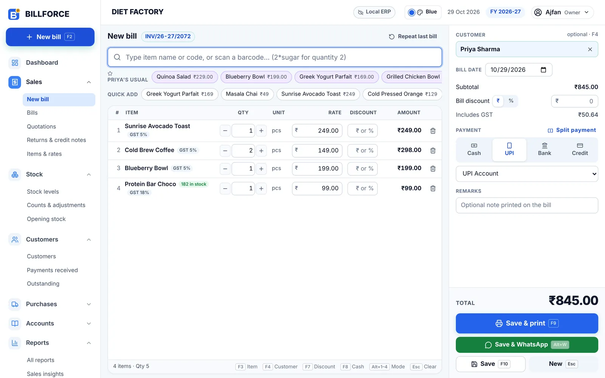

The billing counter
Bill in seconds, right from the keyboard.
Type a few letters or scan a barcode and press Enter. BILLFORCE remembers what your regulars usually order and puts it one click away, so the queue keeps moving.
- Cash, UPI, bank, credit or a split of them, with the change worked out for you.
- GST on every line: CGST, SGST or IGST, with prices that include tax or add it on top.
- Prints straight away on your 58 mm or 80 mm receipt printer, with a UPI QR code for the amount due.
F2 New bill
F9 Save & print
AltW Save & WhatsApp
F4 Customer
